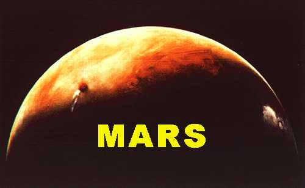
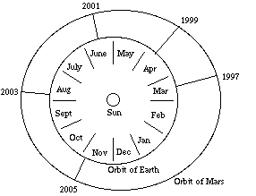
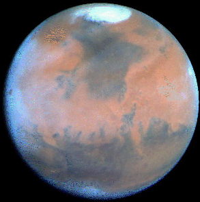
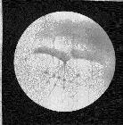
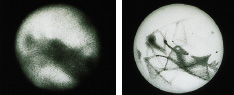
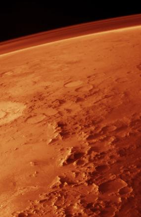
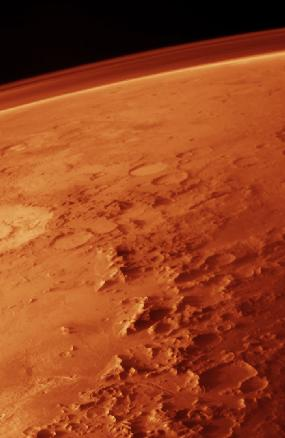

ASTR 121 (O'Connell) Study Guide 16

Crescent Mars during Viking 2 approach 1976.
Clouds trail downwind of volcano Ascraeus Mons.
Mars is the most intriguing planet. From Earth, it exhibits the
largest brightness variations of any planet and has the most
distinctive color (red/pink). Telescopes revealed it to be the most
Earth-like planet, with a transparent atmosphere, varied terrain,
polar caps, and comparable seasons.
Although Mars is smaller than Earth, it has
no oceans, so its present-day land area is comparable to Earth's.
Space missions discovered fantastic topography, including the largest
canyon and the largest mountain in the solar system.
Finally, for over 100 years, Mars has been the favorite candidate
for another biosphere. Claims about "canals" on Mars had tremendous
impact on popular culture. The canals were illusions, but recent
evidence for possible fossil lifeforms and for abundant
water on its surface in the past finally have given real credence
to speculations about life on Mars. Consequently, Mars is now under
intense scrutiny by spacecraft for evidence of a favorable habitat
(now or in the past).
A. MARS: INTRODUCTION
Small: 50% Diam(Earth); 10% Mass(Earth)

Orbit: Semi-major axis 1.5 AU. Orbital period 1.88 yr.
"Oppositions" every 2.1 years
- Orbital ellipticity (10%) implies a large variation in distance &
brightness at opposition. See diagram at right. (Click for
a different illustration.)
- Very conspicuous, red-pink object when brightest (hence its
association with the God of War). Can be brighter than Jupiter.
Atmosphere: thin. Mass ~1% Earth's. Mainly CO2;
some H2O
Surface: easily visible since CO2 is transparent.
Has been explored with ever increasing resolution by
Earthbound telescopes and by spacecraft.
- Red color is caused by iron oxide compounds such as
hematite on its surface. This is equivalent to rust(!). Other
conspicuous markings include white polar caps and large dark areas,
some appearing greenish to the eye in a telescope.
- Mars is distant enough even at opposition that telescopes on
Earth yield relatively poor resolution. This led to a long and
controversial history over whether or not there was evidence for
"canals" or other artificial features on its surface. (See next
section.)
- The image below was taken from Earth orbit by the Hubble Space Telescope and shows the
main kinds of features visible from Earth.
-
 Click here to see a global Mars video composited from multiple
HST data frames.
Click here to see a global Mars video composited from multiple
HST data frames.

B. MAJOR SPACECRAFT MISSIONS TO MARS
Mars has been the target of 38
spacecraft missions, many of which (especially the USSR's) failed
(wow! incompetence or conspiracy??). All
types: flybys, orbiters, landers, rovers. Successful missions have mapped
nearly its entire surface and have sampled atmosphere & soil.
Important Earlier Missions:
- Mariner
Missions: 3 flybys, 1 orbiter, 1964-71; preliminary imaging
reconnaisance of Martian surface
- Viking Missions: 2 orbiters/2 landers. 1976. Sampled
soil and searched for chemical signatures of lifeforms.
- Mars
Pathfinder: a lander with the first rover. Sampled
soil and rocks. 1997.
-
Mars Global Surveyor: orbiter. Mapped surface at high
resolution with a camera and the MOLA laser altimeter. 1998--2006.
Main Current Missions:
- Mars Express: first European mission to Mars. Lander
failed (2003), orbiter (2004-- ) studying surface features,
minerology, atmosphere. Carries a stereoscopic camera and the MARSIS
radar instrument for probing subsurface materials.
- Mars Exploration Rovers Mission: orbiter plus two
landers and rovers ("Spirit" and "Opportunity"), on opposite sides of
planet in areas thought to be associated with large water flows in
past. Geological analysis ongoing. 2004-- .
C. PERCIVAL LOWELL AND CANALS ON MARS

Astronomer Percival
Lowell devoted his career & his observatory (ca. 1890-1915) to
study of features on Mars' surface which he believed to be artificial
"canals" engineered by an advanced civilization for survival
on a desert planet. He made
numerous sketches using a medium-sized telescope (example at right;
click for a larger view). Another Lowell map is here.
Lowell was not the only astronomer claiming to have seen the canals.
The visibility of any such features is strongly affected by the
blurring effects ("seeing"---see Study Guide 14) of the atmosphere. The
canal-enthusiasts claimed to have seen the sharp, straight-line
features during brief moments of stable images. However, many careful
observers were never able to see them.
His efforts to popularize the idea of civilizations on Mars had a
great impact on the public imagination. They were the stimulus for H.
G. Wells' War of the
Worlds, the prototype story of alien invasion.
But the canals are optical illusions!, created by the tendency
of human brain to link threshold markings together. They were never
photographed (see comparison below of a photo and drawing made on
the same night) even with the largest Earth-bound telescopes.

Click for a comparison of an HST image to a drawing.
- Beginning in the 1960's, spacecraft proved there to be no artificial
structures on Mars.
- "Green" markings are likewise an optical illusion, caused by the color
contrast between reddish and grey-brown areas.
The "canals" are an object lesson in dealing with marginal evidence,
a very common situation in science:
There is a great temptation to overinterpret marginal data and
to try to force them to conform to preconceived ideas. Good
scientists will resist this. They will honestly assess the
uncertainties in the situation and will withhold judgement until the
evidence improves.
It turns out that few of the major topological features on
Mars---such as the mountains, canyons, and craters revealed by
close-up spacecraft imaging---are even visible in Earth-based
telescopes. The patterns conspicuous from Earth are large-scale
differences in albedo caused by surface dust and mineral deposits.
The pink/orange dust is very fine. Winds carry it easily across the
surface, causing continuous small changes in appearance.
An example of the best maps of Mars produced by Earth-based
telescopes before the first spacecraft imaging was obtained in the
1960's is shown here. It
bears little resemblance to modern topographic maps produced by orbiting
spacecraft.
There IS much more recent evidence for water and possibly
primitive lifeforms on Mars in the distant past (discussed
later)---but not for advanced Martian organisms.
D. TOPOGRAPHY
Mars features an amazing landscape. Martian topography has been
surveyed by many spacecraft (see above), now reaching an accuracy
of about one meter.
 ASTR
121 Mars Images Page. For illustrations, click here or on
highlighted items below.

ASTR
121 Mars Images Page. For illustrations, click here or on
highlighted items below.

- Click here for
a map showing the main topographic features of Mars.
- The image at right illustrates red color, craters, mountains, plains,
and dust-laden atmosphere. Click for a larger view.
- Impact Craters: widely distributed; more in southern hemisphere
(older); weathered, dusty. The Hellas
Basin is the largest impact crater.
- Volcanos: 5 large "shield" volcanos plus a number of smaller ones. Olympus Mons is the
largest mountain in the solar system.
- Origin of OM & other "Tharsis bulge" region volcanos: upwelling mantle
plume, 1-2 Byr ago
- Concentrated since minimal motion of crust past plume===> large
uplift.
- Qualifies as proto-tectonic activity, but surface not broken into
tectonic plates and activity has been dormant for most of last 1
Byr.
- Valles Marineris: largest
canyon in solar system. Not produced by water. Instead, a
surface rift created during Tharsis upwelling.
- Polar caps: mixture of frozen CO2 and H2O.
Melt and refreeze with seasonal change (H2O at higher
temperatures than CO2).
E. TOPOGRAPHIC EVIDENCE FOR WATER
Click for illustrations.
- No open bodies of water now
- Long known to be some water ice at poles. Trace of water vapor
in atmosphere [in percent, 30 times smaller than on Earth but much
larger than on Venus]
- Layered terrain and other
evidence for sedimentary rocks
- Erosion channels: evidence of
massive floods
Largest flow channels much bigger than on Earth. Implies
catastrophic floods, 100 -- 10,000 times outflow of Amazon
- Evidence for ocean basins
- Recent radar evidence for water ice layers buried thousands of feet deep under
the Martian poles.
- All this evidence points to LARGE
amounts of water in the past, perhaps one billion years ago.
Water possibly now in permafrost reservoirs under surface. Melted by
volcanic activity? Flooding possible cyclic.
- Other sources of evidence concerning water: lander/rover sample
analysis; SNC meteorites (see Guide
17).
Discussion of Mars is continued on
 Study
Guide 17.
Study
Guide 17.
Reading for this lecture:
Seeds textbook, 22-2 (Mars)
Study Guide 16
Reading for next lecture:
Seeds textbook, 22-2 (Mars)
Study Guide 17
Web Links:
Last modified
March 2007 by rwo
"Red Mars" image © 1997 by Calvin J. Hamilton. Mars
orbit graphic by A. Huffman. Text copyright © 1998-2007 Robert W.
O'Connell. All rights reserved. These notes are intended for the
private, noncommercial use of students enrolled in Astronomy 121 at
the University of Virginia.
 Previous Guide
Previous Guide
 Guide Index
Guide Index